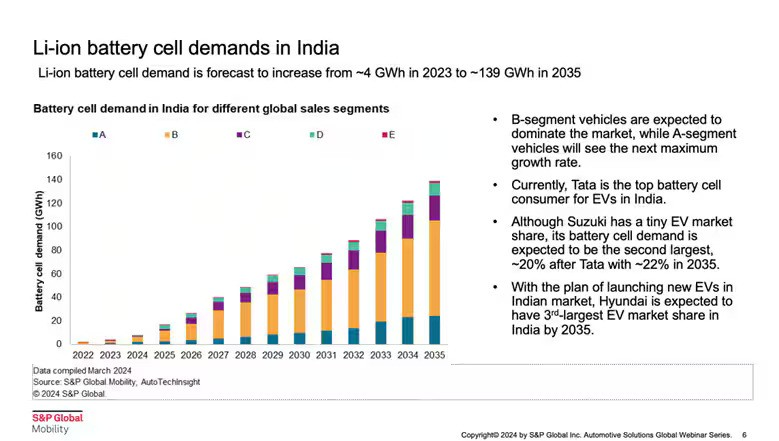
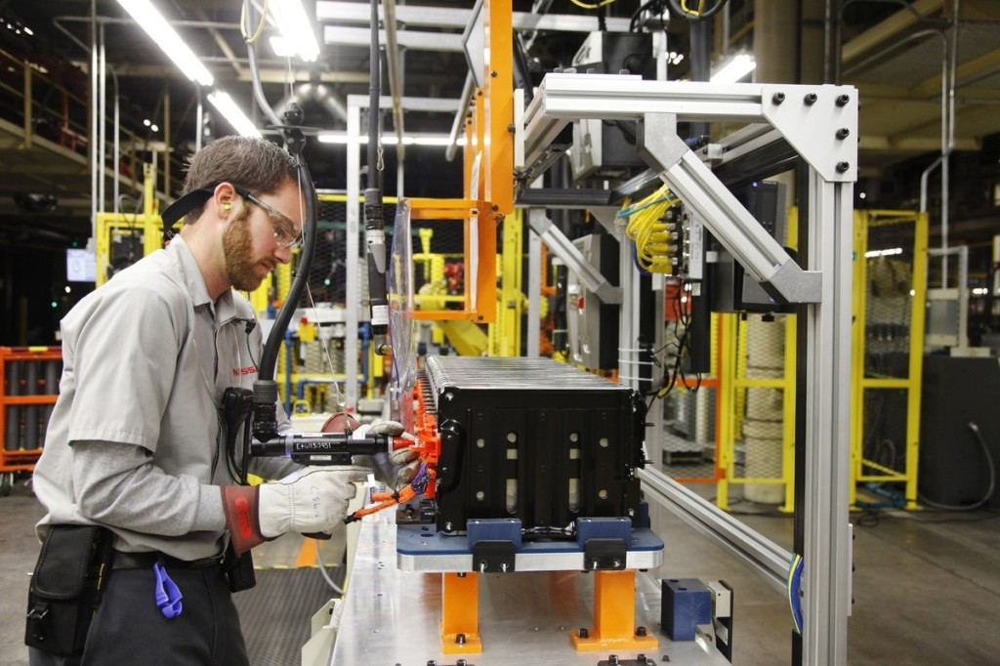
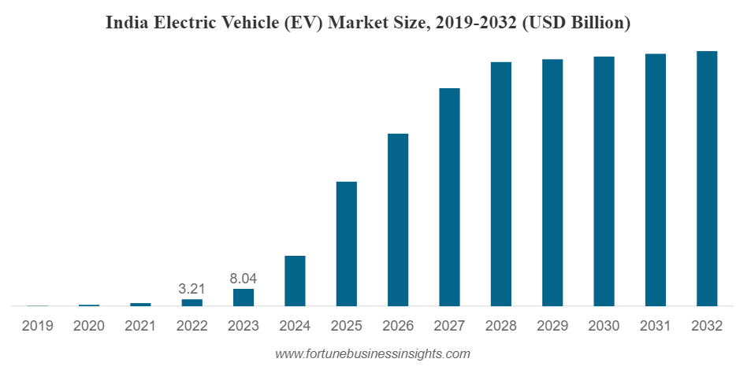

The article "Mastering Battery Testing: Everything You Need to Know" from Averna provides a comprehensive overview of battery testing, which is essential for ensuring the reliability and safety of battery-powered devices, especially in the context of the rapidly expanding electric vehicle (EV) market in India.
As the Indian government pushes for electric mobility through initiatives like the Faster Adoption and Manufacturing of Electric Vehicles (FAME) scheme, effective battery testing has become increasingly critical. The Indian battery testing equipment market is projected to reach a valuation of $770 million by 2032, highlighting the growing demand for robust testing solutions.
Overview of Battery Testing
Battery testing is crucial for manufacturers to optimize performance, prevent failures, and maintain production efficiency. It encompasses various aspects, including:
- Battery Types: Different batteries such as Lithium-ion (Li-ion), Lead-Acid, Nickel-Cadmium (NiCd), and others have unique characteristics and applications. In India, lithium-ion batteries dominate the market due to their high energy density and efficiency. The demand for lithium-ion batteries is expected to surge to 139 GWh by 2035, up from just 4 GWh in 2023.
- Battery Components: Batteries consist of cells, modules, packs, and management units. Each component must be tested individually and as part of the complete system to ensure safety and performance.

Key Testing Parameters
The article outlines several critical testing parameters that manufacturers must consider:
- Voltage Testing: This fundamental step ensures that the battery operates within specified voltage ranges. It includes measuring open circuit voltage (OCV) and checking for cell balancing in multi-cell packs. Given recent fire incidents linked to defective batteries in India, voltage testing has become crucial for preventing overcharging and ensuring safety.
- Current Testing: Essential for assessing a battery's ability to deliver power reliably. This includes determining capacity through discharge tests and evaluating performance under varying load conditions.
- Capacity Testing: Measures how much energy a battery can store and release under controlled conditions. Discharge tests help compare actual capacity against manufacturer specifications.
- Impedance Testing: Assesses internal resistance to identify potential issues affecting efficiency and lifespan. Electrochemical Impedance Spectroscopy (EIS) can detect battery degradation up to six months earlier than traditional methods.

Industry Trends in India
The article also discusses trends in battery selection across various industries within India:
- In automotive applications, there's a shift towards advanced technologies like Li-ion and solid-state batteries for better energy density and environmental impact. The Indian EV market is projected to grow from $23 billion in 2024 to $118 billion by 2032, at a CAGR of 22.4%.
- Consumer electronics predominantly use Li-ion batteries due to their high energy density.
- Medical devices prioritize safety and regulatory compliance when selecting battery types. The Indian government has introduced updated battery safety norms effective from October 1, 2022, which align with EU standards and include comprehensive tests addressing safety concerns.

Conclusion
Effective battery testing is vital for manufacturers to ensure quality and safety in their products. As technology evolves, continuous improvements in testing methods will play a significant role in advancing battery technology and meeting industry demands. With the Indian government mandating extensive testing protocols for EV batteries under new regulations—such as altitude simulation tests and temperature cycling tests—manufacturers are better equipped to ensure the reliability of their products. By addressing fire incidents associated with defective batteries through rigorous testing standards, these regulations aim to foster greater consumer trust and confidence in electric vehicles across India.